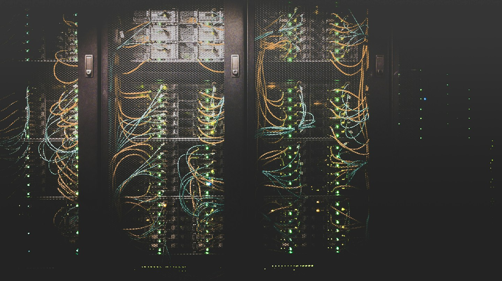

PORQUE SUA EMPRESA NÃO PODE PARAR
Sua empresa em movimento.
A TI acompanha.
Cuidamos da tecnologia para que sua equipe tenha mais tempo para cuidar do negócio. Suporte próximo, infraestrutura e segurança no mesmo lugar.

Desde 2004 ao lado de empresas
Atendimento próximo e humano
TI pensada para a sua rotina
Uma conversa clara sobre o que a sua empresa precisa. É por aí que começamos.
A Linche atua desde 2004 com gestão de TI, segurança e infraestrutura corporativa. De Campinas, acompanha empresas que precisam de tecnologia confiável para trabalhar.
Nosso papel é entender o ambiente, organizar prioridades e construir soluções que façam sentido para a operação. Com transparência e gente por perto.
Conheça nossa forma de trabalhar ↗Do suporte à infraestrutura.
Um cuidado que conecta tudo.
Uma equipe para acompanhar sua infraestrutura e ajudar nas dificuldades do dia a dia.
Entender a soluçãoFirewall, controle de acesso e acompanhamento dos ativos para reduzir riscos na operação.
Entender a soluçãoPlanejamento de nuvem, cópias de segurança e recuperação para cuidar dos dados do seu negócio.
Entender a solução 04
04Ferramentas de colaboração, conectividade e infraestrutura para sua equipe trabalhar melhor.
Entender a soluçãoSem uma receita pronta para todas as empresas.
Conversamos sobre sua rotina, as dificuldades e o que precisa funcionar melhor.
Organizamos as necessidades e as possibilidades de solução para o seu ambiente.
O trabalho continua com gestão, suporte e cuidado com a infraestrutura.
Explore os detalhes.
Selecione uma foto para ampliar.
Fotografias ilustrativas de tecnologia. Não representam a equipe ou as instalações da Linche TI.
A gente começa pela sua realidade.
Entre em contato para conversar sobre o seu ambiente de TI.